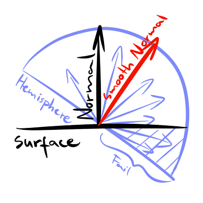
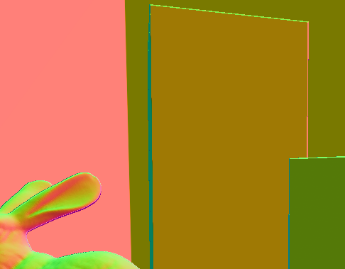
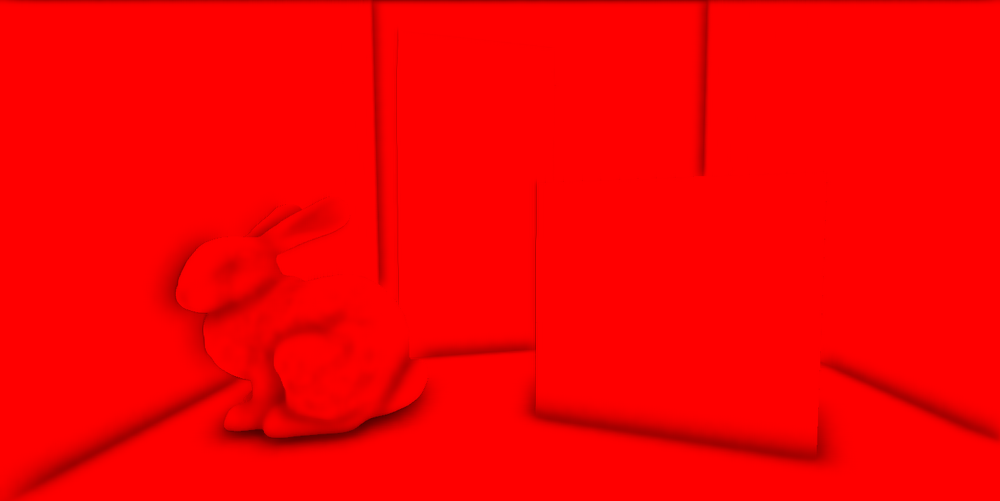
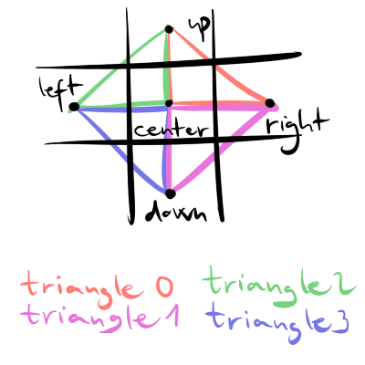
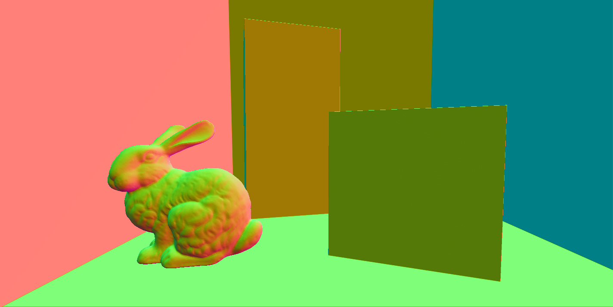
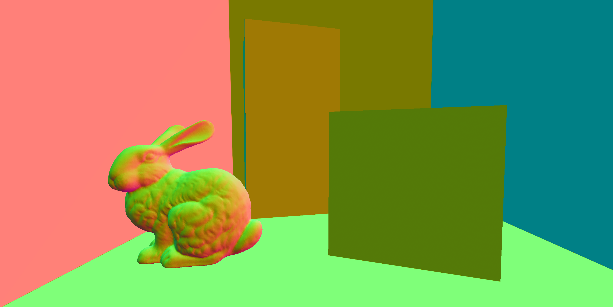

Improved normal reconstruction from depth
In a 3D renderer, we might want to read the scene normal vectors at some point, for example post processes. We can write them out using MRT – multiple render target outputs from the object rendering shaders and write the surface normals to a texture. But that normal map texture usually contains normals that have normal map perturbation applied on them, which some algorithms don’t like. Algorithms that need to ray trace/ray march from the surface in multiple directions around the normal direction are not good fit with these normal mapped textures, because there is a disconnect between what is in the normal map and what is the real surface triangle normal.
SSAO for example falls into this category. We want to sample rays in the normal-oriented hemisphere from the surface and check those rays against the depth buffer. The depth buffer however, contains flat triangle geometry, that doesn’t include the normal map sufrace perturbation. Because of this, rays can go below the surface that the ray is started from, and that will result in some unwanted darkening.

We could write out the flat surface normals with MRT, that would give us the perfect solution. But we probably don’t want to have yet an other render target to write in our object shader pass, to conserve memory bandwidth.
There are ways to reconstruct the flat surface normals from the depth buffer. The idea is that we want to find the normal of the triangle that the depth buffer pixel belongs to. We can find out the slope of the triangle by first computing the pixel world position from the depth buffer, than using ddx(), ddy() and cross() to determine the normal direction:
float depth = texture_depth.SampleLevel(sampler_point_clamp, uv, 0).r;
float3 P = reconstructPosition(uv, depth, InverseViewProjection);
float3 normal = normalize(cross(ddx(P), ddy(P)));By the way, there are multiple ways to reconstruct world position from the depth buffer. One of those ways is by using the native depth buffer and the inverse view projection matrix that was used to render that depth:
float3 reconstructPosition(in float2 uv, in float z, in float4x4 InvVP)
{
float x = uv.x * 2.0f - 1.0f;
float y = (1.0 - uv.y) * 2.0f - 1.0f;
float4 position_s = float4(x, y, z, 1.0f);
float4 position_v = mul(InvVP, position_s);
return position_v.xyz / position_v.w;
}This solution to compute normals is only usable in a pixel shader. In a compute shader you don’t have access to ddx() and ddy() functions. What you can do instead is to compute world positions of nearby pixels, and use them as triangle corners. If you have the triangle corners, you can use cross() to compute the triangle normal, which gives you the flat normal of the current pixel:
float2 uv0 = uv; // center
float2 uv1 = uv + float2(1, 0) / depth_dimensions; // right
float2 uv2 = uv + float2(0, 1) / depth_dimensions; // top
float depth0 = texture_depth.SampleLevel(sampler_point_clamp, uv0, 0).r;
float depth1 = texture_depth.SampleLevel(sampler_point_clamp, uv1, 0).r;
float depth2 = texture_depth.SampleLevel(sampler_point_clamp, uv2, 0).r;
float3 P0 = reconstructPosition(uv0, depth0, InverseViewProjection);
float3 P1 = reconstructPosition(uv1, depth1, InverseViewProjection);
float3 P2 = reconstructPosition(uv2, depth2, InverseViewProjection);
float3 normal = normalize(cross(P2 - P0, P1 - P0));At this point, you might call it a day and use your flat normals. However, you might also notice some edge cases – both of these techniques literally fail on object edges. Even though different object might be at nearby pixels, we are only naively using the depth buffer and make the assumption that nearby samples are forming actual triangles that exist in the scene.
The image above is a screenshot of the reconstructed normal buffer of the Cornell Box scene. Most notably, the edges of the boxes and the silhouette of the bunny became outlined, but that shouldn’t be the case. If we zoom in we see better:

If you use these flat normals, you can get strong artifacts with SSAO on the object edges:

Notice the left edge of the boxes and the bunny. Those normals caused havoc on those parts. Interestingly, the right edges for example don’t show the artifact. But that depends on which nearby samples you select and reconstruct the triangle corners from, you could select triangles that would fail on right edges and not fail on left edges. In more complicated scenes however, with more color variety and not so huge edges, these artifacts could remain hidden.
So what’s the solution? We should select the triangle that will be most correct for our center sample. The most correct triangle is the one whose corners are most probably on the same object as the center sample. We can approximate that by for example comparing depths of nearby samples to the center sample and picking the ones that are closest, and forming a triangle from those.
An effective way to do this is to sample the pixel neighbors in a cross pattern. That will give us the center sample, the left from it, the one above it, the one on the right and finally the one below it. From these five samples, four triangles can be formed that we could be interested in:

We will select the best triangle corner of the horizontal cross axis, and one best corner from the vertical cross axis by comparing their depth values to the center sample and selecting the closest one. For the base triangle corner, we will always use the center sample. When we decided on the best P0, P1 and P2 triangle corners, use the cross product just like before to determine the triangle normal:
float3 normal = normalize(cross(P2 - P0, P1 - P0));Watch out however for the triangle winding order. If you assume counter clockwise order like me, then stick with it for all candidate triangles! That means, triangles in the cross pattern can be formed like this for counter clockwise ordering:
triangle 0 = P0: center, P1: right, P2: up
triangle 1 = P0: center, P1: down, P2: right
triangle 2 = P0: center, P1: up, P2: left
triangle 3 = P0: center, P1: left, P2: downAnd with this technique, those edge artifacts are gone:
Now we are taking a lot of samples per pixel and also doing complicated math for all neighbors (position reconstruction) and branching in the shader, so it will introduce perfromance penalty. The good thing is that it can be optimized more in a compute shader, with group shared memory. We can store the depths and reconstructed positions for a whole 8×8 pixel tile in shared memory efficiently. We will also have an extra border of pixels stored around the tile. Additionally, we can avoid storing depths and reconstructed positions separately, and instead just store reconstructed positions in view space – the view space positions’ Z value stores linear distance, which we can use instead of depth to determine the best triangle candidate. I will demonstrate the full technique in HLSL shader code.
First, we create the group shared memory for the 8×8 pixel tile + one pixel border:
static const uint POSTPROCESS_BLOCKSIZE = 8; // 8x8 pixel tile
static const uint TILE_BORDER = 1;
static const uint TILE_SIZE = POSTPROCESS_BLOCKSIZE + TILE_BORDER * 2;
groupshared float2 tile_XY[TILE_SIZE*TILE_SIZE]; // view space position XY
groupshared float tile_Z[TILE_SIZE*TILE_SIZE]; // view space position ZThe groupshared memory is storing view space positions. I separated the Z values into a deinterleaved array, because those will be loaded more frequently than XY components, when we determine the best corner points.
The compute shader is running in a 8×8 block size:
[numthreads(POSTPROCESS_BLOCKSIZE, POSTPROCESS_BLOCKSIZE, 1)]
void main(uint3 DTid : SV_DispatchThreadID, uint3 Gid : SV_GroupID, uint3 GTid : SV_GroupThreadID, uint groupIndex : SV_GroupIndex)
{
// ... shader body continues here...First thing, we will preload the tile shared memory with the border region with view space positions:
const int2 tile_upperleft = Gid.xy * POSTPROCESS_BLOCKSIZE - TILE_BORDER;
for (uint t = groupIndex; t < TILE_SIZE * TILE_SIZE; t += POSTPROCESS_BLOCKSIZE * POSTPROCESS_BLOCKSIZE)
{
const uint2 pixel = tile_upperleft + unflatten2D(t, TILE_SIZE);
const float2 uv = (pixel + 0.5f) * xPPResolution_rcp;
const float depth = texture_depth.SampleLevel(sampler_linear_clamp, uv,0);
const float3 position = reconstructPosition(uv, depth, InverseProjection);
tile_XY[t] = position.xy;
tile_Z[t] = position.z;
}
GroupMemoryBarrierWithGroupSync();Some things to note from the above code block:
– xPPResolution_rcp is a shader constant, containing the postprocess texture resolution reciprocal. That is: 1.0f / resolution.xy
– I am using InverseProjection matrix for the reconstructPosition. That will give the view space position, instead of world space position if I were using InverseViewProjection matrix.
– The unflatten2D() function converts 1D array index to 2D array index, and looks like this:
uint2 unflatten2D(uint idx, uint2 dim)
{
return uint2(idx % dim.x, idx / dim.x);
}We must synchronize at the end with GroupMemoryBarrierWithGroupSync() to wait all threads to finish populating its part of the group shared memory.
Next thing is to load the depth/view space Z values in the cross pattern and perform the comparisons:
const uint cross_idx[5] = {
flatten2D(TILE_BORDER + GTid.xy, TILE_SIZE), // 0: center
flatten2D(TILE_BORDER + GTid.xy + int2(1, 0), TILE_SIZE), // 1: right
flatten2D(TILE_BORDER + GTid.xy + int2(-1, 0), TILE_SIZE), // 2: left
flatten2D(TILE_BORDER + GTid.xy + int2(0, 1), TILE_SIZE), // 3: down
flatten2D(TILE_BORDER + GTid.xy + int2(0, -1), TILE_SIZE), // 4: up
};
const float center_Z = tile_Z[cross_idx[0]];
const uint best_Z_horizontal = abs(tile_Z[cross_idx[1]] - center_Z) < abs(tile_Z[cross_idx[2]] - center_Z) ? 1 : 2;
const uint best_Z_vertical = abs(tile_Z[cross_idx[3]] - center_Z) < abs(tile_Z[cross_idx[4]] - center_Z) ? 3 : 4;Here, the flatten2D() function is resposible for converting from 2D array index to 1D array index. It can be implemented like this:
uint flatten2D(uint2 coord, uint2 dim)
{
return coord.x + coord.y * dim.x;
}At the end of this, we will know which neighbor is the best in horizontal direction (best_Z_horizontal) and which is best in vertical direction (best_Z_vertical). The horizontal can be either 1 (right) or 2 (left), while the vertical can be 3 (down) or 4 (up).
Finally, determine the best triangle corners with branching and create the triangle normal:
float3 P1 = 0, P2 = 0;
if (best_Z_horizontal == 1 && best_Z_vertical == 4)
{
P1 = float3(tile_XY[cross_idx[1]], tile_Z[cross_idx[1]]);
P2 = float3(tile_XY[cross_idx[4]], tile_Z[cross_idx[4]]);
}
else if (best_Z_horizontal == 1 && best_Z_vertical == 3)
{
P1 = float3(tile_XY[cross_idx[3]], tile_Z[cross_idx[3]]);
P2 = float3(tile_XY[cross_idx[1]], tile_Z[cross_idx[1]]);
}
else if (best_Z_horizontal == 2 && best_Z_vertical == 4)
{
P1 = float3(tile_XY[cross_idx[4]], tile_Z[cross_idx[4]]);
P2 = float3(tile_XY[cross_idx[2]], tile_Z[cross_idx[2]]);
}
else if (best_Z_horizontal == 2 && best_Z_vertical == 3)
{
P1 = float3(tile_XY[cross_idx[2]], tile_Z[cross_idx[2]]);
P2 = float3(tile_XY[cross_idx[3]], tile_Z[cross_idx[3]]);
}
const float3 P0 = float3(tile_XY[cross_idx[0]], tile_Z[cross_idx[0]]);
const float3 normal = normalize(cross(P2 - P0, P1 - P0));Of course, computing the normals in view space means that you will either need to convert them to world-space, or do the SSAO in view space. I chose to do the rest of the shader in view space instead of converting, and reuse the view space position and normal for shooting the rays in view space.
And the normal buffer result is – although not perfect – is closer to what we want. There are still some errors along the edges, but in a reduced amount, and they don’t interfere with the SSAO:

However, I’ve had a slight mistake here, because the SSAO postprocess resolution is half of the depth buffer resolution. When I match the postprocess resolution with the depth buffer resolution, the normal reconstruction is actually nearly perfect (there are a few rogue pixels here and there on sharp corners, but you have to look for them really hard):

And this is with matching resolution, but not using the improvement, the outline is still present and will mess up the SSAO:
However, I don’t have to match their resolution in practice, because the SSAO results were already good with the improved reconstruction. At the end of the day, implementing the reconstruction improvement was worth it.
Well, that’s it, I hope you found it useful. I think it was definitely useful for me at least to document this for myself for future reference. 🙂
Take a look at SSAO implementation in Wicked Engine using this technique and feel free to use it for whatever you want.
I also saw this improvement technique described in a stackoverflow answer.
This is an other technique for normal reconstruction from Yuwen Wu. It discusses and solves a corner case that was not described here.
Mistakes, typos, questions? Let me know in the comments.